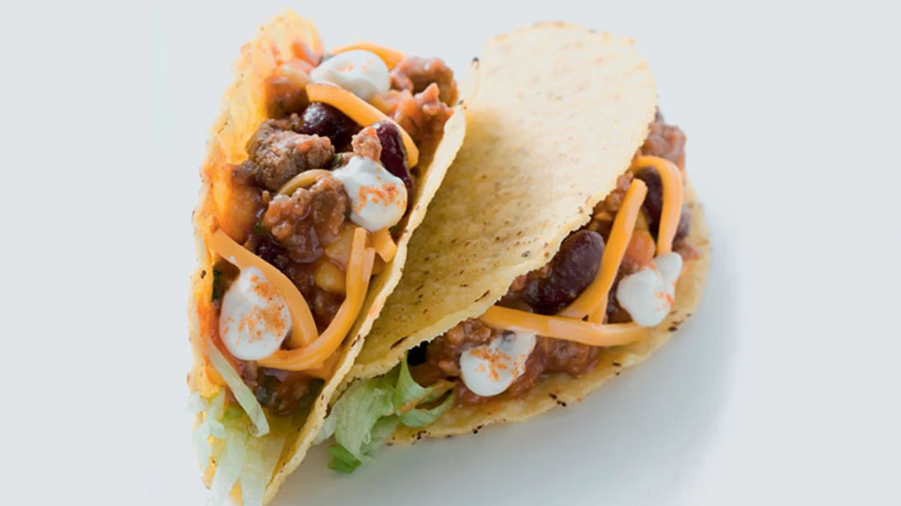

Tacos de Carne

Los tacos de carne son una de las recetas más representativas de la comida mexicana. Consisten en tortillas suaves rellenas de carne sazonada, acompañadas de cebolla, cilantro y salsas al gusto. Son fáciles de preparar y muy sabrosos.